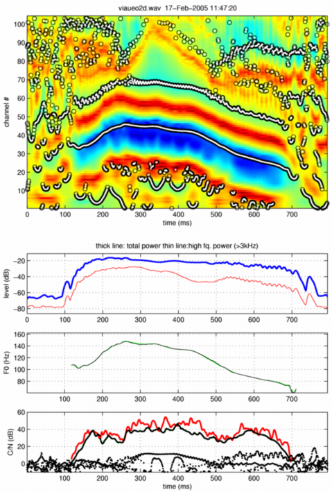

| | | 分析合成の既定値の変更 | Contents | Index |
前の節で紹介した既定値は、フィールド名を指定して値を設定することにより，変更することができます。 指定する場合には，変更したいフィールドだけを有する構造体を作成して、最後のパラメタとして関数を呼び出して下さい。 それぞれの関数の呼び出し方を以下に示します。
[f0raw,ap,prmF0]=exstraightsource(x,fs prmF0in); [n3sgram,prmP]=exstraightspec(x,f0raw,fs,prmPin); [sy,prmS] = exstraightsynth(f0raw,n3sgram,ap,fs,prmS);
ここでは、音源情報抽出関数を例として説明します。 使用頻度の多い音声合成関数については、節を改めて説明します。 まず、音源情報表示用のフィールドであるDisplayPlotsを用いて、 抽出される音源情報と、背景として用いられた情報を表示することにします。 以下のようなコマンドを入力すると、それらの情報が以下のようにプロットされます。
prminF0.DisplayPlots=1; prminF0.note='viaueo2d.wav'; figure;[f0raw,ap]=exstraightsource(x,fs,prminF0);
なお、ここで入れた二行目は、読み込んだファイル名です。 このフィールドには，任意の文字列を書き込むことができますが、 ファイル名を入れておくのが適当でしょう。

| | | 分析合成の既定値の変更 | Contents | Index |